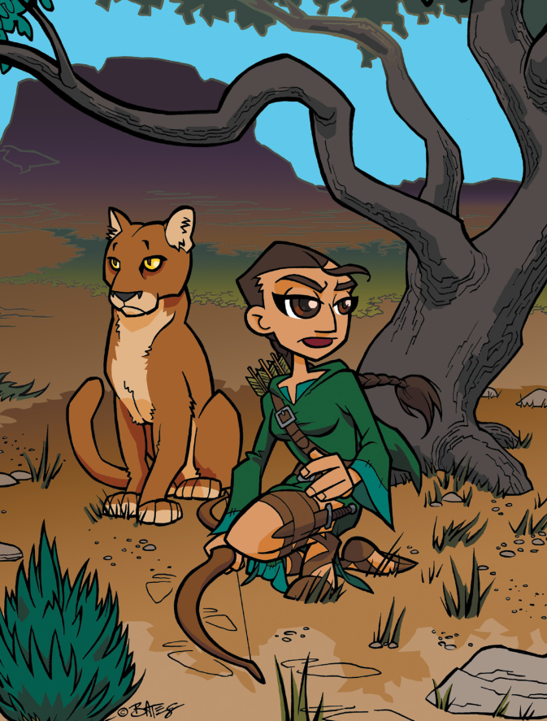

Création des personnages

Afin de jouer à PremièreFable, chaque joueur nécessite un personnage (la GP n'a pas son propre personnage ; en lieu et place, la GP va jouer tous les autres personnages incluant les alliés, les ennemis, les passants et même les animaux). Créer un personnage est rapide et facile et peut être fait en 4 étapes. A chaque étape, nous expliquons comment faire, et nous répondons aux questions qui peuvent se poser.
Première fable inclut des Livres de Personnages qui aident les joueurs avec les étapes de création du personnage. Le Livre de Personnage inclut des questions et des étapes de création qui ne sont pas couvertes dans le livre pour GP (le présent guide), parce qu'elles n'ont pas d'impact immédiat pour le système de jeu (ils sont utiles pour aider les joueurs à donner un peu de matière à leurs personnages). La GP devrait vraiment lire les Livres de Personnages afin de pouvoir aider les joueurs dans leur création, et de pouvoir répondre à leurs questions.
Etape 1 : Choisir son type de personnage
Ce livre inclut 4 types de personnages:
- Le Chevalier,
- La Princesse Fée,,
- L'Amoureuse des Animaux, [2],
- Le Pirate.
Un personnage est déterminé par ses valeurs en Force, Vitesse et Intelligence.
| Type | Force | Vitesse | Intelligence |
|---|---|---|---|
| Amoureuse des Animaux | 3 | 2 | 4 |
| Princesse Fée | 2 | 4 | 3 |
| Chevalier | 4 | 3 | 2 |
| Pirate | 3 | 3 | 3 |
Que faire si nous sommes plus de quatre joueurs ?
Plusieurs joueurs peuvent avoir le même type de personnage. De fait, il pourrait être amusant de créer des chevaliers qui ont grandi et se sont entraînés ensemble, ou des pirates à terre provenant du même navire. Le type de personnage est juste un point de départ.
Que faire si je veux jouer une fille chevalier ou un garçon prince fée ?
Les filles peuvent absolument être des chevaliers ou des pirates, et les garçons peuvent certainement être des princes fée ou des amoureux des animaux. Nous avons juste choisi cette présentation dans ce livre parce qu'ils sont faciles à reconnaître, mais vous devriez absolument faire les personnages que vous voulez jouer !
Que faire si je veux jouer un Ninja (ou un autre type de personnage qui n'est pas dans le tableau) ?
Nous devrions, dans le futur, proposer de nouveaux types de personnages pour PremièreFable. En attendant, choisissez le type qui est le plus proche de ce que vous voulez jouer ("Ninja" est probablement plus proche de Chevalier que de Pirate, quoique cela puisse s'argumenter) et demandez à la GP de changer des règles qui n'auraient pas de sens.
Que faire si je veux jouer un chevalier plus intelligent ou une amoureuse des animaux plus rapide ?
Une façon de faire la différence si vous avez un score bas dans une des caractéristiques est d'utiliser les Talents [3]. Mais si vous voulez ajuster les chiffres, allez-y.
Les trois caractéristiques :
- Doivent faire un total de 9 ;
- Ne peuvent pas être inférieures à 2.
Etape 2 : Quels sont les Talents de votre personnage ?
Chaque joueur doit choisir trois compétences dans lesquelles son personnage est très fort. Ce sont les aptitudes pour lesquels le personnage est connu. Ces "Talents" devraient être ceux que le joueur voudrait voir utilisées dans le jeu.
Par exemple, un pirate pourrait être très bon à nettoyer les ponts des navires, mais ce n'est certainement pas quelque chose qu'un joueur voudrait choisir comme Talent, parce que ce n'est pas quelque chose qui sera utile dans le contexte d'une histoire.
De même, est-ce qu'un pirate a besoin de prendre "Connaît tout sur les bateaux" comme Talent ? Ou même "Se balancer sur des cordes" ? Le personnage est un pirate, après tout, et donc est-ce que tous les pirates ne savent pas faire ces choses ?
Oui et non ; un personnage peut faire tout ce que son type de personnage peut faire selon un accord entre le joueur et la GP. Un pirate sait comment fonctionne un bateau, une amoureuse des animaux sait reconnaître les appels des oiseaux, un chevalier sait monter à cheval, et une princess fée sait retrouver son chemin dans une forêt.
Mais si un chevalier peut se tenir sur un cheval galopant et s'élancer sur une horde déferlante d'ennemis, ou si une amoureuse des animaux peut tendre l'oreille afin de reconnaître exactement quels types d'oiseaux sont dans les environs, il s'agit d'un degré de compétences qui requiert probablement un Talent.
Les Talents sont attachés aux Caractéristiques. "Monter à cheval" est sans doute sous Vitesse ou Force, tandis que "Connaissance des oiseaux" est sous Intelligence. Néanmoins, cela ne signifie pas que vous ne pouvez pas utiliser vos Talents avec d'autres caractéristiques. Nous allons bientôt aborder le sujet d'utiliser les Talents dans les règles du jeu. Pour le moment, écrivez seulement les Talents qui ont le plus de sens.
Est-ce que je peux avoir "Combat" comme Talent ?
Bien sûr ! Mais il faut être un peu plus précis. Est-ce que votre Chevalier brille en "Joutes", en "Combat à l'épée" ou en "Lutte" ? Est-ce que votre Princesse Fée utilise une corde pour prendre au piège ses ennemis, ou une rapière enchantée (une rapièce est une petite épée fine, dans le cas où vous ne sauriez pas) ? Combattre n'est pas obligatoirement la meilleure façon d'obtenir ce que vous voulez, donc faites attention si vous le prenez comme Talent !
Et si je n'arrive pas à trouver trois Talents ?
Pas de problème. Décidez-vous juste sur un ou deux maintenant et quand le jeu démarrera, et que vous aurez joué votre personnage un petit peu, vous déciderez quels sont vos Talents. Il est possible que votre personnage n'ait pas encore découvert quels sont ses Talents et ce peut être assez amusant de le découvrir durant le jeu.
Etape 3 : Quel est le Point Faible de votre personnage ?
Personne ne peut être bon à tout. Nos personnages favoris dans les films, les livres et à la télévision sont amusants non parce qu'ils sont toujours bons, rapides, forts et intelligents, mais parce qu'ils font le travail et font ce qu'il faut faire, même quand ils ont peur, qu'ils sont faibles ou confus.
Chaque joueur doit donc choisir un Point Faible pour son personnage.
Un Point Faible est quelque chose qui peut être demandé au personnage, mais pour lequel ce dernier n'est pas très bon. Presque tout ce qui peut être un Talent peut aussi être un Point Faible. Par exemple, un Chevalier peut avoir comme Point Faible "Monter à cheval". Il peut faire tout ce que les autres chevalier peuvent faire - le combat, les usages de la cour, et ainsi de suite - mais quand il monte sur un cheval, il a toutes les peines du monde pour rester dessus.
Les personnages n'ont pas à connaître leur Point Faible. Les joueurs, bien entendu, doivent le connaître, mais le personnage peut très bien croire qu'il est très bon à quelque chose, alors que c'est un Point Faible. Une Amoureuse des Animaux peut adorer coudre et se confectionner des habits, mais tous les habits qu'elle crée sont soit trop petits, soit trop grand, soit ont trois trous pour les bras. Ou alors, le personnage peut être très au fait de son Point Faible et avoir honte, ou avoir peur que les autres personnages ne le découvre. La manière avec laquelle le personnage réagit face au Point faible est tout aussi importante que le Point Faible lui-même.
Pourquoi dois-je avoir un Point Faible ?
Parce que personne n'est parfait. Chacun d'entre nous fait mal quelque chose. Il est possible que cela n'apparaisse jamais durant le jeu, mais en tout état de cause, cela peut apparaître, et si c'est le cas, le personnage a une chance de battre son Point Faible et de gagner sa journée.
Est-ce que mon Point Faible peut être mon allergie au chat ?
Il est mieux que votre Point Faible soit une compétence que votre personnage n'ait pas, plutôt que des problèmes physiques ou des traits de personnalité. Cela dit, si la GP est d'accord et que vous voulez bien appliquer une pénalité à chaque fois qu'une allergie se produit, alors bien entendu, vous pouvez prendre une allergie (ou quelque chose de similaire) comme Point Faible.
Etape 4: Choisissez votre Truc Spécial
Tous les personnages ont droit à un "Truc Spécial". Ce dernier peut être :
- Un objet magique,
- Un animal de compagnie,
- Un sort,
- Ou un ange gardien d'une sorte particulière.
Les Trucs Spéciaux ont des limites quant à leur fréquence d'utilisation dans le cadre des Défis, mais ils peuvent faire partie de l'action à tout moment.
Par exemple, une Princesse Fée peut avoir "Magie des Fées" comme Truc Spécial. Sa magie peut rendre des choses légères comme des plumes, et cela pourrait aider les personnages dans un Défi s'ils sont prisonniers dans une grotte en raison d'un gros rocher. Mais user de cette magie pour soulever un autre personnage d'un ou deux mètres du sol (parce que c'est drôle), ou pour aider la grand-mère d'un Chevalier à bouger ses meubles (parce que ce n'est pas un Défi) ne compte pas comme usage du Truc Spécial au cours de l'aventure.
Le Truc Spécial que choisit le joueur à la création de son personnage a 5 Etoiles (vous pouvez apprendre à quoi servent ces Etoiles dans la section "Règles" de ce manuel).
Puis-je avoir plus d'un Truc Spécial ?
Votre personnage démarre seulement avec un seul Truc Spécial, mais vous pourrez en obtenir d'autres durant le jeu. Certains Trucs Spéciaux ne dureront que le temps d'une aventure, d'autres resteront avec vous.
Puis-je avoir un animal de compagnie si je suis un Pirate ou un sort de magie si je suis un Chevalier ?
Bien entendu ! Il est assez facile d'imaginer un pirate avec un singe ou un perroquet de compagnie, et il se peut que le Chevalier ait étudié avec un sorcier durant un temps dans sa jeunesse, pour n'apprendre qu'un seul sort. Ou alors le Chevalier a simplement toujours été capable de lancer ce sort sans savoir pourquoi - découvrir pourquoi pourrait faire l'objet d'une aventure amusante !
Exemple de personnage : Ruby
La petite Teagan va jouer à PremièreFable, elle a donc besoin de créer un personnage. Elle s'assied avec son père (la GP) pour en créer un.
Etape 1 : Choisir le type du personnage
Teagan choisit Amoureuse des Animaux. Elle souhaite que son personnage ait un gros chat tigré comme ami. La GP lui demande de s'en souvenir car elle devra choisir un Truc Spécial plus tard. Teagan nomme son personnage "Ruby". Elle écrit les nombres sur sa feuille de personnage :
| Nom du personnage | Type de personnage |
|---|---|
| Ruby | Amoureuse des Animaux |
Caractéristiques
| Force | Vitesse | Intelligence |
|---|---|---|
| 3 | 2 | 4 |
Teagan est un peu déçue de son score en Vitesse mais la GP lui demande d'attendre l'étape suivante.
Etape 2 : Quels sont les Talents de votre personnage ?
Teagan décide que son personnage est très rapide, même en courant dans les bois. Elle prend "Galoper" comme Talent. Elle veut aussi que Ruby soit bonne avec les animaux. La GP lui demande ce qu'elle entend par là : que veut-elle faire avec les animaux ? Les dresser ? Leur parler ? En prendre soin ? Teagan réfléchit (souvenons-nous que Ruby peut déjà faire tout cela étant donné que cela fait du sens pour une Amoureuse des Animaux), et décide que le second Talent de Ruby sera "Soigner les animaux blessés". Pour le dernier Talent, Teagan voudrait que Ruby soit capable de "Lancer des choses". C'est acceptable pour la GP qui aide alors Teagan à renseigner tout cela sur sa feuille de personnage.
| Talent | Score |
|---|---|
| Galoper | 1 |
| Soigner les animaux blessés | 1 |
| Lancer des choses | 1 |
Etape 3 : Quel est le Point Faible de votre personnage ?
Teagan cherche durant un moment ce qui pourrait causer des ennuis à Ruby. Elle décide que Ruby ne sait pas "Faire du camping". Ele prend toujours des échardes dans les mains lorsqu'elle tente de faire du feu, ce genre de choses.
| Point Faible | Score |
|---|---|
| Faire du camping | 1 |
Etape 4 : Choisir un Truc Spécial
Teagan a déjà choisi le truc Truc Spécial de son personnage. Ruby a comme animal domestique un chat des bois, ressemblant à un tigre avec de la fourrure grise et noire, et répondant au doux nom de "Flamboyante". Flamboyante est une grande sensible, mais elle peut grogner fortement et effrayer les gens.
Teagan a alors terminé de remplir sa feuille de personnage. Elle est prête à démarrer !
| Truc spéciaux | Effets | Etoiles |
|---|---|---|
| Flamboyante (Animal de compagnie) | Grognement effrayant | 5 |
| - | - | - |